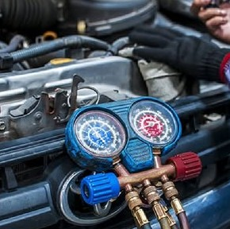
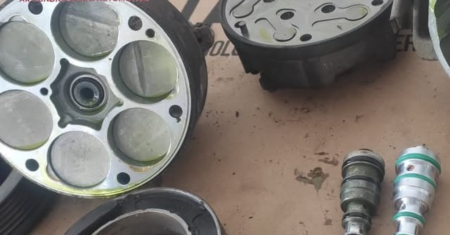
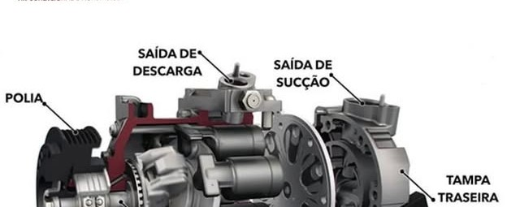

Ar gelando
de novo. Sem chute.
Há mais de 20 anos na Avenida Vasco da Gama cuidando do ar-condicionado de carros nacionais e importados. A gente mede, mostra o que achou e só mexe depois que você aprova.

O que o seu ar
está tentando dizer?
Escolha o que você está sentindo no carro. A gente mostra as causas mais comuns, o quanto isso é urgente e qual serviço resolve. A avaliação com profissional continua sendo o que confirma.
Manutenção & instalação
Do filtro de cabine à troca do compressor. Todo serviço sai com a temperatura de saída medida antes e depois, anotada na sua ordem de serviço.
Como o seu ar
faz o frio
Cinco peças trabalham em circuito fechado. Quando uma falha, o ar para de gelar. Toque em cada etapa para ver onde ela fica.


Frotas, empresas e motoristas de app
Carro parado é dinheiro parado. E carro de aplicativo sem ar gelando perde nota na primeira corrida.
- Plano de manutenção preventiva com calendário por placa
- Prioridade na fila e previsão de entrega no mesmo dia quando possível
- Relatório mensal por veículo: o que foi feito, quanto custou e quando volta
- Faturamento único para a empresa
A gente avisa quando é hora de voltar
Toda ordem de serviço fica guardada com a placa. Na hora certa, você recebe a mensagem no WhatsApp.
- Higienização e filtro: a cada 6 meses ou 10 mil km
- Revisão completa do sistema: uma vez por ano, antes do verão
- Garantia do serviço registrada na OS, com data de vencimento
“Nosso ar-condicionado sai daqui funcionando. Disso a gente tem certeza.”
São mais de 20 anos no mesmo endereço da Vasco da Gama, na Federação, trabalhando só com uma coisa: ar-condicionado de carro. Nacionais e importados, do compressor ao filtro de cabine.
A regra da casa é simples: nada de remendo. O paliativo resolve hoje e o problema volta pior amanhã. Por isso a gente avalia, mostra a leitura dos manômetros e explica o que precisa ser feito antes de começar.
Trazer meu carro →Marque a avaliação
em um minuto
Você chega, a gente já sabe o que procurar
O sintoma que você marcar aqui vai direto para o técnico antes do carro entrar.
- 1Escolha o dia e o período. A Procar confirma pelo WhatsApp.
- 2Na avaliação, medimos pressões e temperatura de saída.
- 3O orçamento chega no seu celular. Você aprova pelo link.
- 4Acompanhe cada etapa pela placa, aqui no site.
Acompanhe pela placa
Sem precisar ligar para perguntar. Veja a etapa, a leitura do diagnóstico e aprove o orçamento daqui.
Demonstração: experimente RPX3A21 (aguardando aprovação), RTF7K48 (em teste) ou PKM8C04 (pronto).
Av. Vasco da Gama, 277
Federação, Salvador. No sentido Rio Vermelho.
- (71) 98699-1542
- Telefone
- (71) 3245-1602
- Atendimento
- Segunda a sábado · horário a confirmar